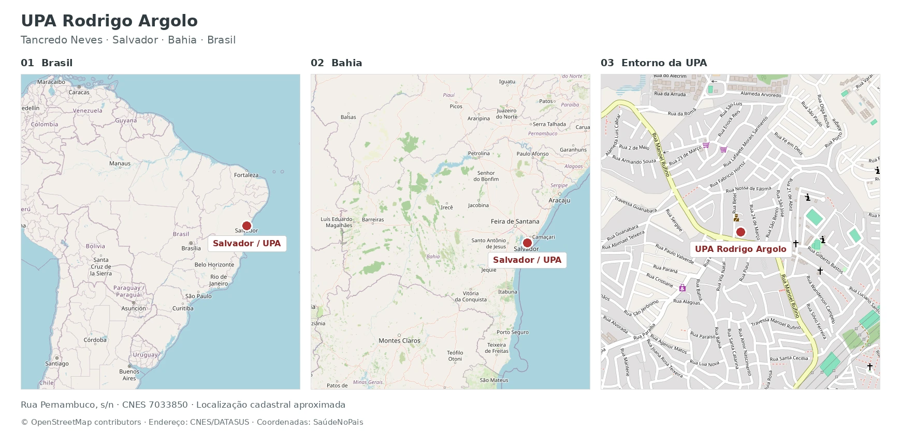
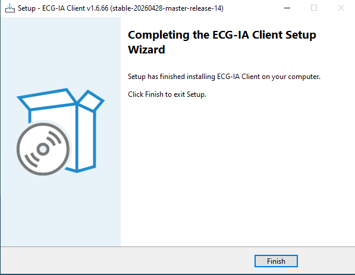
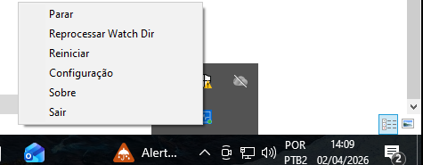
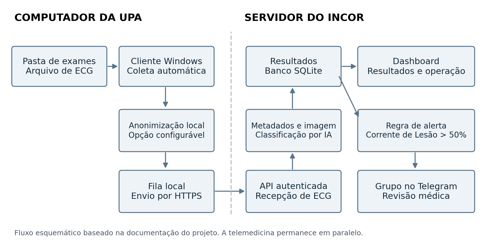
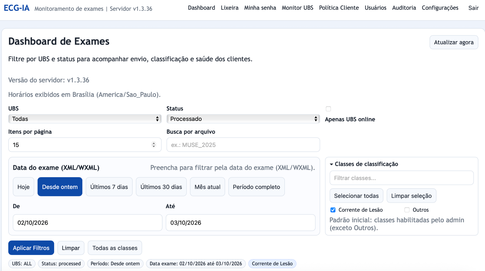
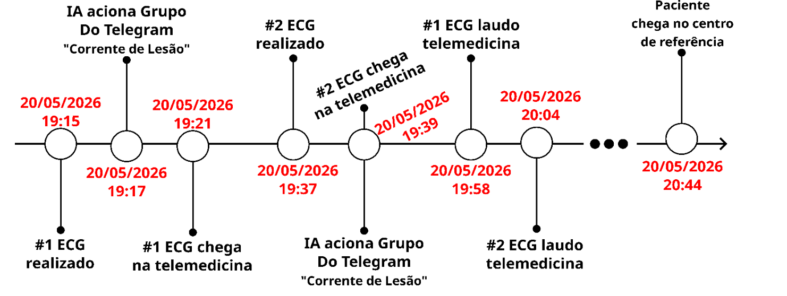

ECGs de UPAs · InCor · 2026
Gorgona
Classificação de ECGs integrada ao atendimento de urgência
Objetivo
Quando um ECG feito na UPA sugere infarto agudo do miocárdio, o Gorgona avisa a equipe de regulação pelo Telegram. O exame também segue para a telemedicina. A ideia é antecipar o aviso para que a equipe médica avalie o paciente e decida a conduta.
O que fiz
Além de liderar o projeto, fiz a integração inicial entre o modelo, o programa Windows, o servidor do InCor, o painel e o Telegram. Trabalhei junto à equipe clínica, responsável pelo protocolo de atendimento e pela avaliação dos exames.

Local da implantação
Implantamos o sistema na UPA Rodrigo Argolo, no bairro de Tancredo Neves, em Salvador. Os ECGs são feitos na UPA e analisados no servidor do InCor.

Como funciona
Fluxo anterior
A equipe enviava o ECG à telemedicina manualmente. Depois do laudo e da avaliação médica, podia acionar a regulação pelo Telegram. Quando a suspeita clínica era forte, o médico da UPA também podia contatar o grupo diretamente.
Com o Gorgona
O programa acompanha a pasta de exames e envia os novos arquivos ao InCor para classificação. Quando a probabilidade da classe Corrente de Lesão passa de 50%, o sistema avisa o grupo de regulação pelo Telegram.
| Etapa | Fluxo anterior | Com o Gorgona |
|---|---|---|
| Coleta | Envio manual à telemedicina | Detecção na pasta de exames |
| Análise | Avaliação médica e laudo | Classificação adicional por IA |
| Comunicação | Acionamento pela equipe | Alerta automático pelo Telegram |
| Decisão | Equipe médica e regulação | Equipe médica e regulação |
Cliente Windows, servidor e plataforma online
O programa na UPA
O ECG-IA Client acompanha uma pasta no Windows e coloca os novos exames na fila de envio. Cada instalação tem sua própria credencial. Pelo menu na bandeja do Windows, a equipe pode configurar o programa, reiniciá-lo ou reenviar arquivos.




Servidor e plataforma online
Uma API em FastAPI recebe o exame, lê os metadados e converte o traçado em imagem quando necessário. As classes e probabilidades ficam em SQLite. O painel mostra os resultados e o estado dos clientes, e a integração com o Telegram envia os alertas.

Proteção de dados e LGPD
O cliente permite anonimizar os arquivos no computador da UPA antes do envio. A transmissão usa HTTPS, com credenciais por instalação e perfis de acesso. Esses recursos, isoladamente, não comprovam conformidade integral com a LGPD.
O painel permite filtrar resultados por unidade, período, status e classe.

Resultados e avaliação
Estudo de caso
O caso é de um atendimento em 20 de maio de 2026, na UPA Rodrigo Argolo. O paciente deu entrada às 18h52 e fez dois ECGs. Cada exame gerou um alerta 2 minutos depois. A chegada ao centro de referência foi registrada às 20h44.

| Evento | Primeiro ECG | Segundo ECG |
|---|---|---|
| Realização do ECG | 19h15 | 19h37 |
| Alerta da IA | 19h17 | 19h39 |
| Chegada à telemedicina | 19h21 | 19h39 |
| Emissão do laudo | 19h58 | 20h04 |
| Do exame ao alerta | 2 min | 2 min |
| Antecedência em relação ao laudo | 41 min | 25 min |
O primeiro alerta chegou 4 minutos antes de o exame entrar na telemedicina. Os dois avisos antecederam os laudos em 41 e 25 minutos. A regulação recebeu a informação mais cedo, mas esse caso isolado não permite concluir que a IA reduziu o tempo de tratamento ou melhorou o desfecho.
Modelo de classificação
O Gorgona usa como base o modelo da AIMED, equipe que liderei no PhysioNet Challenge 2024. Ficamos em primeiro lugar em classificação. O artigo do CinC 2024 descreve o pré-treinamento com ECGs e o ensemble ConvNeXt. Na minha tese, detalho os bancos de imagens, os experimentos e a avaliação clínica.
O classificador reúne modelos ConvNeXt para identificar 12 categorias. No estudo com 18.519 ECGs de 14.402 pacientes, anotados por 19 cardiologistas, o macro F1 no teste reservado foi de 0,807 (IC 95%: 0,788 a 0,825).
Artigos de referência
- Dias FM, Ribeiro E, Soares QB, Krieger JE, Gutierrez MA. Image-Based Electrocardiogram Classification Using Pre-trained ConvNext. Computing in Cardiology, 2024.
- Dias FM. Classificação automatizada de imagens de eletrocardiogramas por aprendizado profundo. Universidade de São Paulo · Tese de doutorado, 2025.
- Dias FM et al. Image-based deep learning for emergency electrocardiogram classification. medRxiv · Preprint, 2026.
- Dias FM et al. Artificial Intelligence-Driven Screening System for Rapid Image-Based Classification of 12-Lead ECG Exams: A Promising Solution for Emergency Room Prioritization. IEEE Access, 2023.